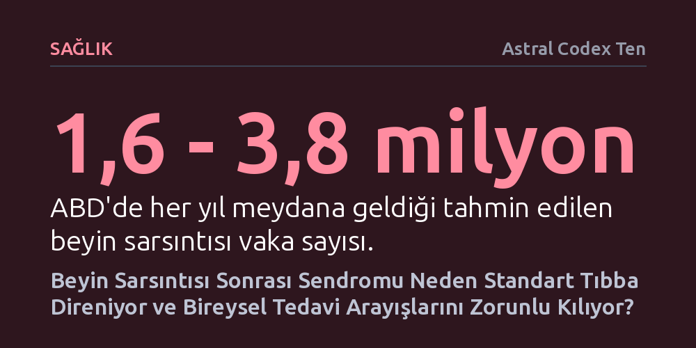

SAGLIK · Astral Codex Ten · 2026-10-25
Beyin sarsıntısı ortalama bir beyni değil kişiye özel sinir ağlarını zedelediğinden, standart klinik deneyler ve görüntüleme yöntemleri kronik vakaların tedavisinde yetersiz kalıyor. Hastaların alternatif yöntemlerle şifa bulabilmesi, tıbbın ortalama etkilere odaklanmak yerine bireysel vaka kayıtlarını sistematik olarak incelemesi gerektiğini gösteriyor.
Tıbbın altın standardı sayılan rastgele kontrollü klinik deneylerin kişiye özgü beyin hasarlarında neden tıkandığını ve hastaların gayriresmî deneme yanılmalarının araştırmalara nasıl öncülük edebileceğini gösterir.

1999 yılında yapay zekâ profesörü Clark Elliott, kırmızı ışıkta beklerken arkadan gelen bir aracın çarpmasıyla sarsılır. İlk anda durumunun iyi olduğunu zannetse de bu kaza, hayatının sonraki on yılını esir alacak ağır bir beyin hasarının başlangıcı olur. Standart tomografi ve manyetik rezonans taramaları Elliott'ın beyninde hiçbir fiziksel lezyon gösteremez. Zira ani ivmelenmenin yol açtığı yaygın aksonal hasar, sinir iletim hatlarında mikroskobik yırtıklara sebep olmakta ve geleneksel tıbbın görüntüleme cihazlarında görünmemektedir.
Bu görünmez hasar hastanın zekâsını eksiltmez; ancak zihnin farklı yetenekleri arasındaki koordinasyonu tamamen koparır. Elliott lisansüstü düzeyde ders verebilirken yürüyerek eve döndüğünde kendi evini tanıyamaz; merdivenleri tırmanabilir fakat aşağı inemez; yazabilir fakat okuyamaz. Elliott, zihnindeki bu kopuşu "Merkez kavramını kaybetmiştim; daire, hedef ya da orta kavramlarına dair zihnimde hiçbir görsel temsil kalmamıştı" sözleriyle aktarır. En çarpıcı krizlerden biri mutfakta yaşanır: Salam ile elma arasında hangisini önce yiyeceğini seçemeyen profesör, eylemi başlatma mekanizması kilitlendiği için tam iki gün boyunca aç kalır.
Dönemin tıp sistemi bu tür hafif travmatik beyin hasarlarını kavramaktan uzaktır. Acil servis hekimleri göz bebeklerine bakıp hastayı eve yollar; nörologlar yarım saatlik basit testlerin ardından bir sorun olmadığını öne sürer. Milyonlarca insan benzer sarsıntılar geçirmekte ve hatırı sayılır bir kısmı aylarca hatta yıllarca süren sarsıntı sonrası sendromuyla tek başına mücadele etmek zorunda kalmaktadır.
Klasik tıbbın kapıyı yüzüne kapatması üzerine Elliott, kazadan on yıl sonra son çare olarak geleneksel kalıpların dışındaki iki uzmana başvurur: Bilişsel yapılandırma uzmanı Donalee Markus ve nöro-optometrist Deborah Zelinsky. Markus, hastaya zihinde çözülmesi gereken karmaşık üç boyutlu geometrik bulmacalar verir. Zelinsky ise hastanın gözleri tamamen kapalıyken çaldığı zillere dokunmasını isteyen ve kapalı göz kapaklarının ardından ışık geçirdiği varsayılan özel prizmatik mercekler dener. İlginç biçimde, bu seansların ardından Elliott bir yıl içinde çarpıcı bir iyileşme gösterir ve hayatını geri kazandığını belirtir.
Fakat bu iyileşmenin ardındaki bilimsel kanıtlar incelendiğinde tablo oldukça şüphelidir. Markus'un bulmaca temelli yöntemi kontrollü deneylerle kanıtlanmamış bireysel bir protokolden ibarettir. Zelinsky'nin kapalı gözle uyguladığı prizma testleri ise fiziksel gerçeklerle çelişir; zira insan göz kapakları mekânsal algıyı güncelleyecek bir ışık iletimi sağlamaz. Yıllarca hekimlerden ret gören çaresiz bir hastanın yoğun ilgiyle karşılaştığında güçlü bir plasebo etkisi yaşamış olması veya hastalığın zamanla kendiliğinden sönümlenmesi ihtimali yabana atılamaz.
Buna karşın, yöntemin ardındaki teorik açıklama geçersiz olsa bile ulaşılan pratik sonucun gerçek bir biyolojik temeli bulunabilir. Sarsıntı geçiren hastaların çoğunda gözlerin yakındaki nesnelere odaklanmasını sağlayan oküler koordinasyon bozulur. Prizmatik veya büyütücü camlar, görüntünün retinadaki düşüş açısını değiştirerek göz kaslarındaki aşırı yükü hafifletir. Kendi sarsıntı sürecinde benzer sıkıntılar yaşayan yazar da büyütücü camların belirtilerini anında sildiğini aktarır. Zelinsky'nin zil ritüeli anlamsız olsa dahi, hastaya doğru merceğin bulunmasını sağlayarak iyileşmeyi dolaylı yoldan tetiklemiş olabilir.
Beyin sarsıntısının tedavisini modern tıp için bir bilmeceye dönüştüren temel etken, hastalığın standart bir şablona uymamasıdır. Beyin hasarı soyut bir ortalama beyni değil; her bireyin kendine has sinirsel zayıflıklarını, bilişsel eğilimlerini ve bağlantılarını vurur. Tıp belirli klinik tipler tanımlasa bile, aynı tanıya sahip iki hasta bambaşka tepkiler verir. Örneğin aynı görme güçlüğünü yaşayan iki hastadan biri prizmatik camlarla toparlanırken, bir diğeri sadece büyütücü merceklerden fayda görür.
Kanıta dayalı tıbbın altın standardı sayılan rastgele kontrollü klinik deneyler bu noktada yapısal bir açmaza düşer. Bilim felsefecisi Nancy Cartwright'ın vurguladığı üzere, bu deneyler bir tedavinin incelenen grupta ortalama olarak işe yarayıp yaramadığını gösterir; fakat o tedavinin tekil bir hastada sonuç verip vermeyeceğini açıklayamaz. Sarsıntı gibi son derece heterojen ve öznel semptomlara sahip tablolarda, ortalama başarıyı arayan standart klinik deneyler yetersiz kalır. Sonuçta hastalar, bireysel farklılıkları görmezden gelen kurumsal tıp ile pahalı sahte umutlar pazarlayan şarlatanlar arasındaki tekinsiz bir boşlukta sıkışır.
İnsanlık, biyolojik mekanizmasını henüz çözemediği sorunları kültürel deneme yanılma yoluyla aşma konusunda köklü bir geçmişe sahiptir. Fiji'deki ada halkının hamile kadınlara belirli resif balıklarını yasaklaması buna iyi bir örnektir; kadınlar bu balıkların ciguatera toksini taşıdığını bilmeseler de pratik gözlem nesiller boyu doğru çözümü üretmiştir. Benzer şekilde sarsıntı hastaları da internet forumlarında kendi denedikleri çözümleri paylaşarak kolektif bir arayış yürütmektedir. Ancak forum ekosisteminde doğruyu yanlıştan ayıracak güvenilir bir elek bulunmadığından, gerçekten işe yarayan müdahaleler ile pahalı istismarlar iç içe geçer.
Burada yapılması gereken, klinik deneyleri tamamen terk etmek değil; kanıt hiyerarşisinin adımlarını doğru sıralamaktır. Long COVID hastalarının kurduğu araştırma girişimlerinde görüldüğü gibi, hastaların geniş çaplı ve yapılandırılmış gözlemleri resmi araştırmalara güçlü hipotezler sağlayabilir. Bireysel vaka kayıtlarının ciddiyetle toplanıp elendiği ve ardından kontrollü deneylerle sınandığı hibrit bir yaklaşım, kişiye özgü beyin hasarlarında tıbbın kör noktalarını aydınlatacak en umut verici yoldur.